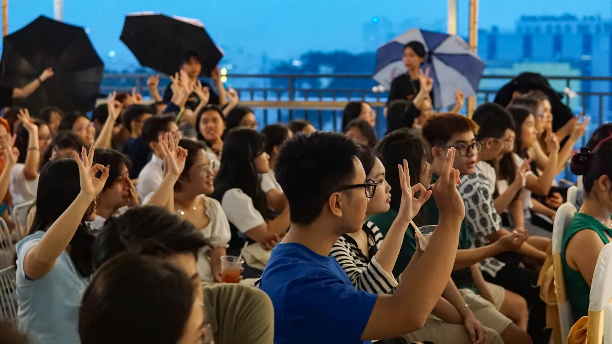
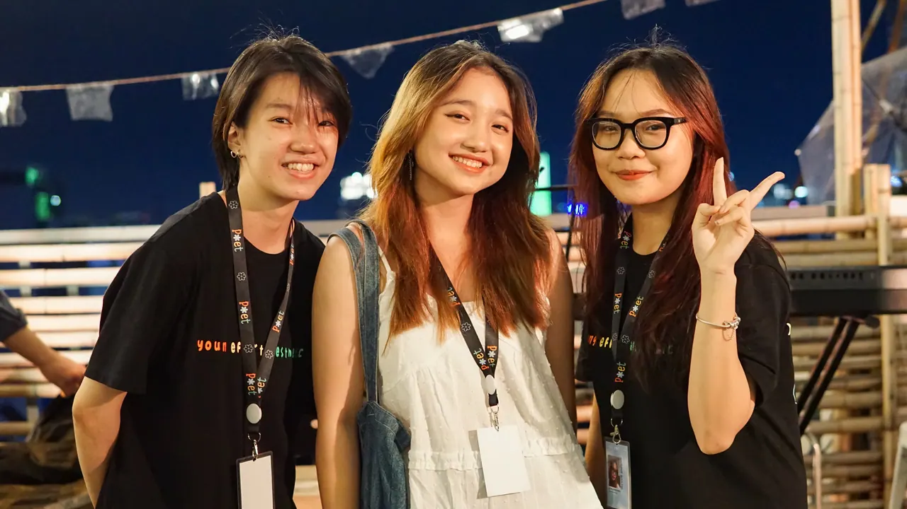
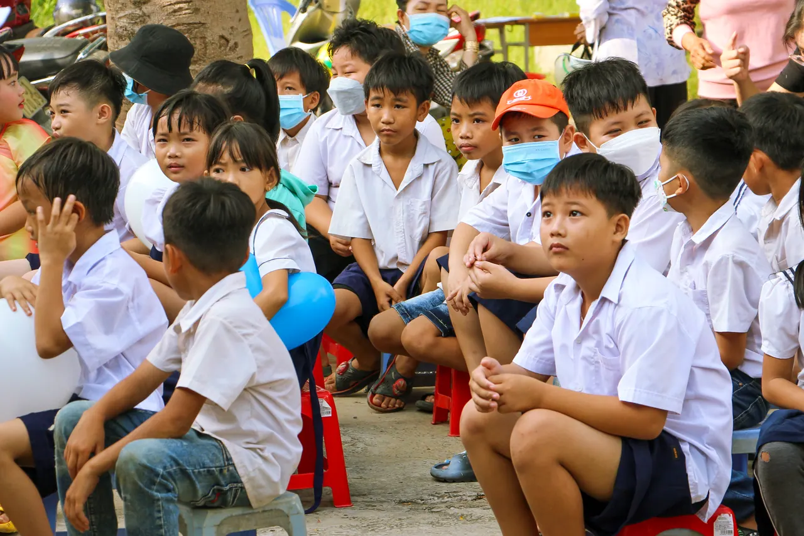

Đêm nhạc acoustic gây quỹ “Vết Nứt”
Với sự tham gia của 120 khán giả và 5 nhà tài trợ, chương trình đã thành công lan tỏa thông điệp tích cực về sức khỏe tinh thần đến cộng đồng, đêm nhạc cũng đã tạo nên một sân chơi để các nghệ sĩ trẻ thể hiện đam mê âm nhạc của mình. Ý nghĩa hơn cả, đây còn là hoạt động gây quỹ cho Dự án cải thiện chất lượng học tập tại Trường tiểu học Mỹ Thạnh Bắc (Đức Huệ, Long An).

…dùng âm nhạc để chạm tới đứa trẻ bên trong của mỗi người, đặc biệt là những bạn trẻ ở độ tuổi vừa trưởng thành với nhiều tâm sự khó giãi bày.
Lê Phương Minh · Trưởng Ban tổ chức đêm nhạc, giải thích cho chủ đề “Vết Nứt”
2 tháng chuẩn bị
“Vết Nứt” là đêm nhạc gây quỹ diễn ra trong khuôn khổ của POET 2022. Sau 2 tháng dày công chuẩn bị, từ khâu liên hệ nhà tài trợ tới thuê địa điểm và lên bài truyền thông, “Vết Nứt” đã thành công diễn ra vào ngày 16/07/2022.
Trên sân khấu
Đêm nhạc có sự xuất hiện của các nghệ sĩ trẻ, với phong cách đa dạng như Nguyên Đán, Helen, Minh Trung, Nhữ Thùy Dương,... Ngoài ra, còn có sự góp mặt của nghệ sĩ Mer, tác giả của bài hát mang giai điệu vui tươi “Giấc mơ rất thơ”.
- Nguyên Đán
- Helen
- Minh Trung
- Nhữ Thùy Dương
- Mer
Những ngôi sao giấy
Cũng trong khuôn khổ của “Vết Nứt”, các bạn khán giả đã cùng nhau tham gia hoạt động xếp sao giấy. Những ngôi sao sau khi xếp xong, sẽ được bỏ ngay ngắn vào trong một hũ thuỷ tinh, và được chuyển đến tận tay các em nhỏ trong chuyến đi cuối của dự án.
Về tới điểm trường
Toàn bộ lợi nhuận của đêm nhạc cùng với số tiền hơn 30 triệu đồng nhận được từ các nhà hảo tâm đã được dùng vào Dự án cải thiện điều kiện học tập của em ở trường tiểu học Mỹ Thạnh Bắc (Đức Huệ, Long An).
